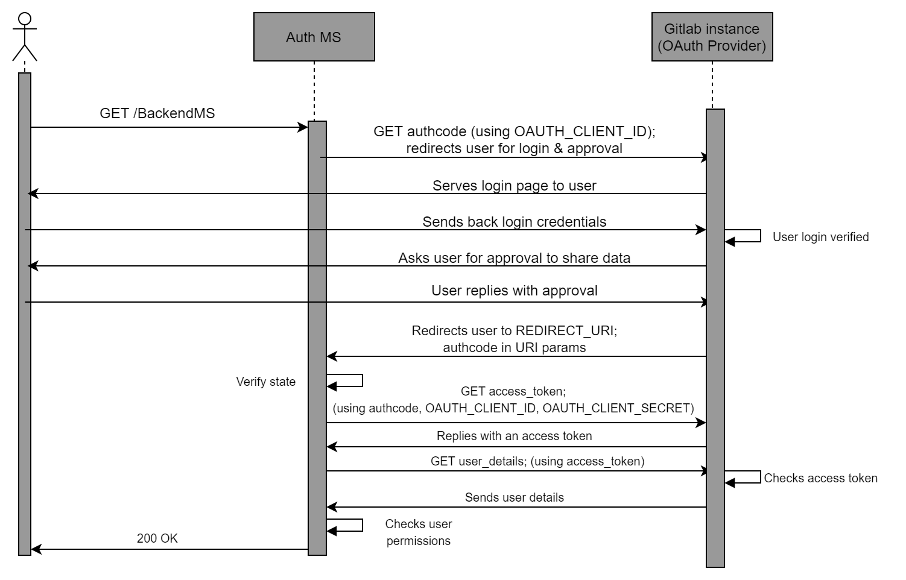

Auth Microservice
This document details the workflow and implementation of the DTaaS Auth Microservice. Please go through the System Design and the summary of the OAuth2.0 technology to be able to understand the content here better.
Workflow
User Identity using OAuth2.0
We define some constants that will help with the following discussion:
- CLIENT ID: The OAuth2 Client ID of the Auth MS
- CLIENT SECRET: The OAuth2 Client Secret of Auth MS
- REDIRECT URI: The URI where the user is redirected to after the user has approved sharing of information with the client.
- STATE: A random string used as an identifier for the specific "GET authcode" request (Figure 3.3)
- AUTHCODE: The one-use-only Authorization code returned by the OAuth2 provider (GitLab instance) in response to "GET authcode" after user approval.
Additionally, let's say DTaaS uses a dedicated gitlab instance hosted at the URL https://gitlab.foo.com (instead of https://foo.com)

A successful OAuth2 workflow (Figure 3.3) has the following steps:
- The user requests a resource, say GET/BackendMS
- The Auth MS intercepts this request, and starts the OAuth2 process.
- The Auth MS sends a authorization request to the Gitlab instance.
This is written in shorthand as GET/authcode. The actual request (a user redirect) looks like:
Here the gitlab.foo.com/oauth/authorize is the specific endpoint of the Gitlab instance that handles authorisation code requests.
The query parameters in the request include the expected response type, which is fixed as code, meaning that we expect an Authorization code. Other query parameters are the client id, the redirect uri, the scope which is set to read user for our purpose, and the state (the random string to identify the specific request).
-
The OAuth2 provider redirects the user to the login page. Here the user logs into their protected account with their username/email ID and password.
-
The OAuth2 provider then asks the user to approve/deny sharing the requested information with the Auth MS. The user should approve this for successful authentication.
-
After approval, the user is redirected by the GitLab instance to the REDIRECT URI. This URI has the following form:
The REDIRECT URI is as defined previously, during the OAuth2 Client initialisation, i.e. the same as the one provided in the GET authcode request by the Auth MS. The query parameters are provided by the Gitlab instance. These include the AUTHCODE which is the authoriation code that the Auth MS had requested, and the STATE which is the same random string in the GET authcode request.
-
The Auth MS retrieves these query parameters. It verifies that the STATE is the same as the random string it provided during the "GET authcode" request. This confirms that the AUTHCODE it has received is in response to the specific request it had made.
-
The Auth MS uses this one-use-only AUTHCODE to exchange it for a general access token. This access token wouldnt be one-use-only, although it would expire after a specified duration of time. To perform this exchange, the Auth MS makes another request to the GitLab instance. This request is written in shorthand as GET/access_token in the sequence diagram. The true form of the request is:
The request to get a token by exchanging an authorization code,
is actually a POST request (for most OAuth2 providers).
The
- The Gitlab instance exchanges a valid AUTHCODE for an Access Token. This is sent as a response to the Auth MS. An example response is of the following form:
The access token field provides the string that can be used as an access token in the headers of requests tryng to access user information. The token type field is usually bearer, the expires in field specifies the time in seconds for which the access token will be valid, and the
created at field is the Epoch timestamp at which the token was created. The refresh token field has a string that can be used to refresh the access token, increasing its lifetime. However we do not make use of the refresh token field. If an access token expires, the Auth MS simply asks for a new one. TOKEN is the access token string returned in the response.
-
The Auth MS has finally obtained an access token that it can use to retrieve the users information. Note that if the Auth MS already had an existing valid access token for information about this user, the steps above wouldnt be necessary, and thus wouldnt be performed by the Auth MS. The steps till now in the sequence diagram are simply to get a valid access token for the user information.
-
The Auth MS makes a final request to the Gitlab instance, shorthanded as GET user_details in the sequence diagram. The actual request is of the form:
Here,
- The Gitlab instance verifies the access token, and if it is valid, responds with the required user information. This includes username, email ID, etc. An example response looks like:
The important fields from this response are the email, username keys. These keys are unique to a user, and thus provide an identity to the user.
- The Auth MS retrieves the values of candidate key fields like email, username from the response. Thus, the Auth MS now knows the identity of the user.
Checking User permissions - Authorization
An important feature of the Auth MS is to implement access policies for DTaaS resources. We may have requirements that certain resources and/or microservices in DTaaS should only be accessible to certain users. For example, we may want that /BackendMS/user1 should only be accessible to the user who has username user1. Another example may be that we may want /BackendMS/group3 to only be available to users who have an email ID in the domain @gmail.com. The Auth MS should be able to impose these restrictions and make certain services selectively available to certain users. There are two steps to doing this:
-
Firstly, the users identity should be known and trusted. The Auth MS should know the identity of a user and believe that the user is who they claim to be. This has been achieved in the previous section
-
Secondly, this identity should be analysed against certain rules or against a database of allowed users, to determine whether this user should be allowed to access the requested resource.
The second step requires, for every service, either a set of rules that define which users should be allowed access to the service, or a database of user identities that are allowed to access the service. This database and/or set of rules should use the user identities, in our case the email ID or username, to decide whether the user should be allowed or not. This means that the rules should be built based on the kind of username/ email ID the user has, say maybe using some RegEx. In the case of a database, the database should have the user identity as a key. For any service, we can simply look up if the key exists in the database or not and allow/deny the user access based on that.
In the sequence diagram, the Auth MS has a self-request marked as Checks user permissions after receiving the user identity from the Gitlab instance. This is when the Auth MS compares the identity of the user to the rules and/or database it has for the requested service. Based on this, if the given identity has access to the requested resource, the Auth MS responds with a 200 OK. This finally marks a succcessful authentication, and the user can now access the requested resource. Note: Again, the Auth MS and user do not communicate directly. All requests/responses of the Auth MS are with the Traefik gateway, not the User directly. Infact, the Auth MS is the external server used by the ForwardAuth middleware of the specific route, and communicates with this middleware. If the authentication is successful, The gateway forwards the request to the specific resource when the 200 OK is recieved, else it drops the request and returns the error code to the user.
Implementation
Traefik-forward-auth
The implementation approach is setting up and configuring the open source thomseddon/traefik-forward-auth for our specific use case. This would work as our Auth microservice.
The traefik-forward-auth software is available as a docker.io image. This works as a docker container. Thus there are no dependency management issues. Additionally, it can be added as a middleware server to traefik routers. Thus, it needs atleast Traefik to work along with it properly. It also needs active services that it will be controlling access to. Traefik, the traefikforward-auth service and any services are thus, treated as a stack of docker containers. The main setup needed for this system is configuring the compose.yml file.
There are three main steps of configuring the Auth MS properly.
- The traefik-forward-auth service needs to be configured carefully. Firstly, we set the environment variables for our specific case. Since, we are using Gitlab, we use the generic-oauth provider configuration. Some important variables that are required are the OAuth2 Client ID, Client Secret, Scope. The API endpoints for getting an AUTHCODE, exchanging the code for an access token and getting user information are also necessary
Additionally, it is necessary to create a router that handles the REDIRECT URI path. This router should have a middleware which is set to traefik-forward-auth itself. This is so that after approval, when the user is taken to REDIRECT URI, this can be handled by the gateway and passed to the Auth service for token exchange. We add the ForwardAuth middleware here, which is a necessary part of our design as discussed before. We also add a load balancer for the service. We also need to add a conf file as a volume, for selective authorization rules (discussed later). This is according to the suggested configuration. Thus, we add the following to our docker services:
- The traefik-forward-auth service should be added to the backend services as a middleware.
To do this, the docker-compose configurations of the services need to be updated by adding the following lines:
This creates a router that maps to the required route, and adds the auth middleware to the required route.
-
Finally, we need to set user permissions on user identities by creating rules in the conf file. Each rule has a name (an identifier for the rule), and an associated route for which the rule will be invoked. The rule also has an action property, which can be either auth or allow. If action is set to allow, any requests on this route are allowed to bypass even the OAuth2 identification. If the action is set to auth, requests on this route will require User identity OAuth2 and the system will follow the sequence diagram. For rules with action=auth, the user information is retrieved. The identity we use for a user is the users email ID. For auth rules, we can configure two types of User restrictions/permissions on this identity:
-
Whitelist - This would be a list of user identities (email IDs in our case) that are allowed to access the corresponding route.
- Domain - This would be a domain (example: gmail.com), and only email IDs (user identities) of that domain (example: johndoe@gmail.com) would be allowed access to the corresponding route.
Configuring any of these two properties of an auth rule allows us to selectively permit access to certain users for certain resources. Not configuring any of these properties for an auth rule means that the OAuth2 process is carried out and the user identity is retrieved, but all known user identities (i.e. all users that successfully complete the OAuth) are allowed to access the resource.
DTaaS currently uses only the whitelist type of rules.
These rules can be used in 3 different ways described below. The exact format of lines to be added to the conf file are also shown.
- No Auth - Serves the Path(/public) route. A rule with action=allow should be imposed on this.
- User specific: Serves the Path(/user1) route. A rule that only allows user1@localhost identity should be imposed on this
- Common Auth - Serves the Path(/common) route. A rule that requires OAuth, i.e. with action=allow, but allows all valid and known user identities should be imposed on this.